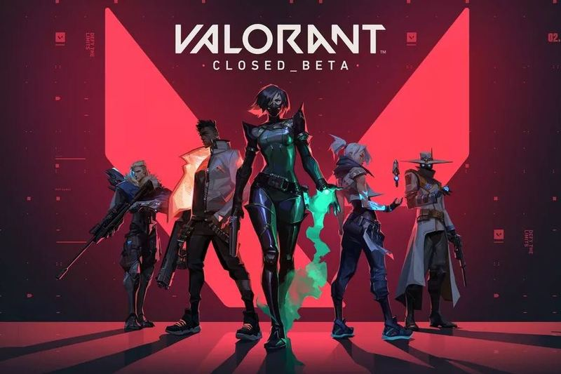
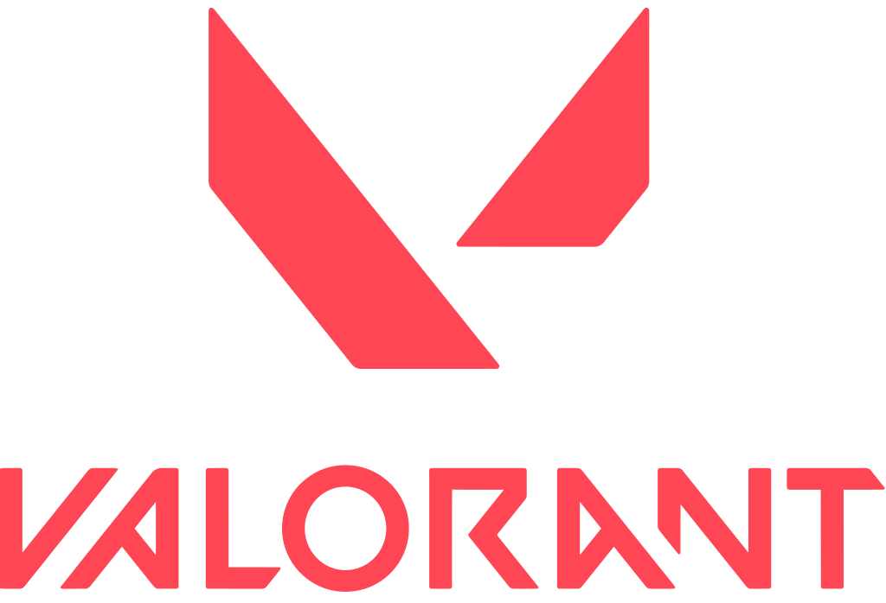

Valorant
Valorant is a free-to-play first-person hero shooter developed and published by Riot Games, for Microsoft Windows. First teased under the codename Project A in October 2019, the game began a closed beta period with limited access on April 7, 2020, followed by an official release on June 2, 2020.
More than guns and bullets, you’ll choose an Agent armed with adaptive, swift, and lethal abilities that create opportunities to let your gunplay shine. No two Agents play alike, just as no two highlight reels will look the same.
Riot
Riot chose to develop Valorant using Unreal Engine 4, which the development team said would allow it to focus on gameplay and optimizations rather than spending time on core systems. To meet the goal of a lower performance barrier so more people could play Valorant, the team set notably low minimum and recommended hardware requirements for the game. To reach 30 frames per second on these small requirements, the game's engineering team, led by Marcus Reid, who previously worked on Gears of War 4, had to make several modifications to the engine. These modifications included editing the renderer using the engine's mobile rendering path as base, or reworking the game's lighting systems to fit the static lighting that tactical shooters often require, as to not interfere with gameplay.
Anti-cheat software
The game has been criticized for its anti-cheat software, Vanguard, as it was revealed to run on a kernel driver, which allows access to the computer system. OSNews expressed concern that Riot Games and its owner, Chinese technology conglomerate Tencent, could spy on players and that the kernel driver could be potentially exploited by third parties. However, Riot Games stated that the driver does not send any information back to them, and launched a bug bounty program to offer rewards for reports that demonstrate vulnerabilities with the software.